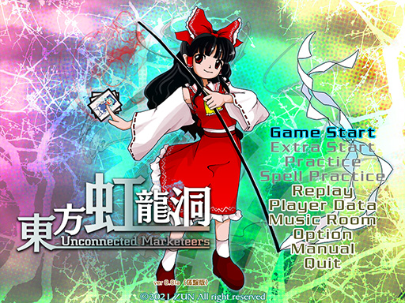

東方虹龍洞 ～ Unconnected Marketeers

Touhou Project 18
Developer: Team Shanghai Alice
Release Year: 2021 (Trial)
Platform: Windows
Currently demo-only; trial releases on Steam on 3/23
Touhou Wiki
Gameplay Sample
Soundtrack